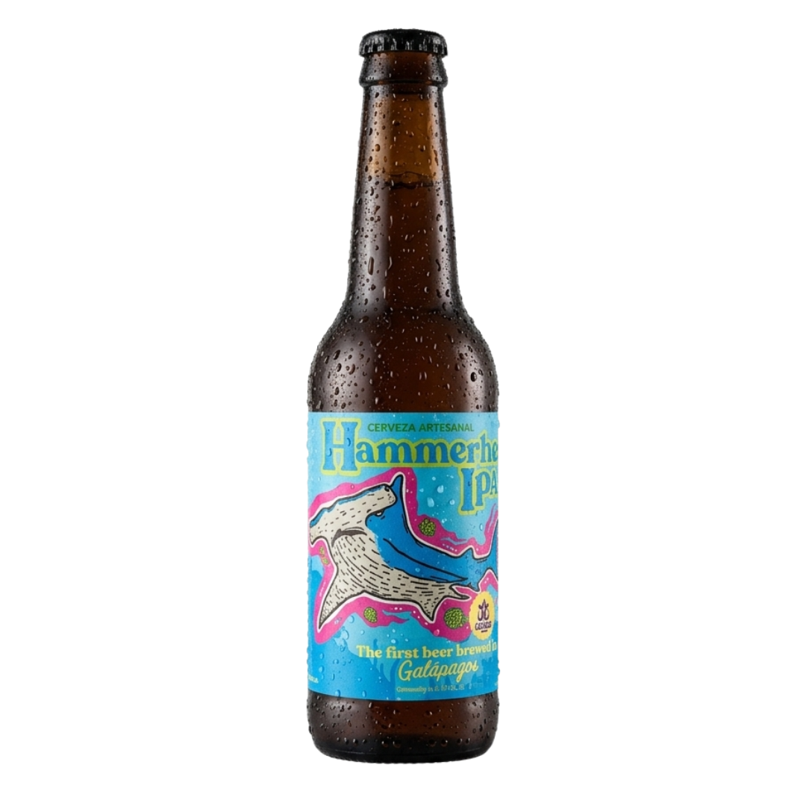
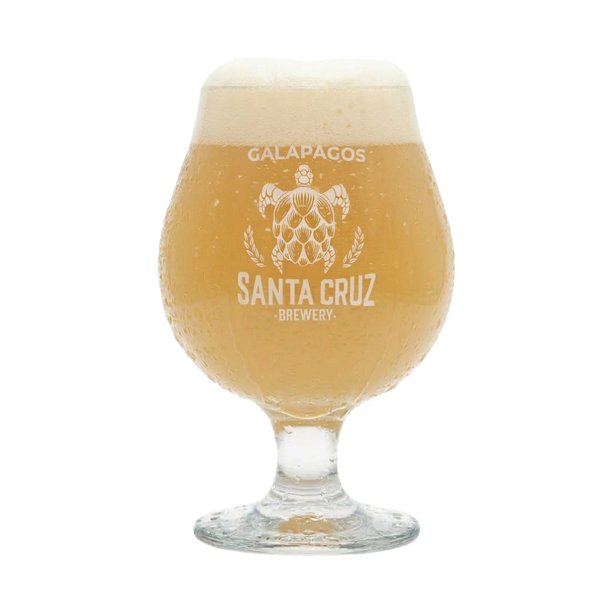
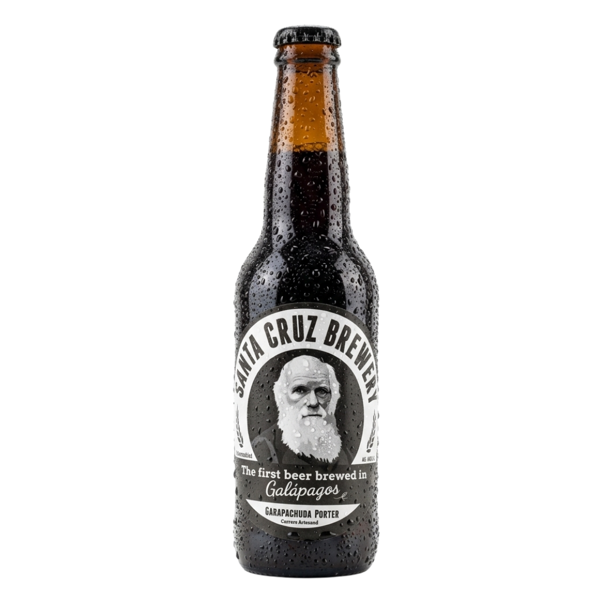
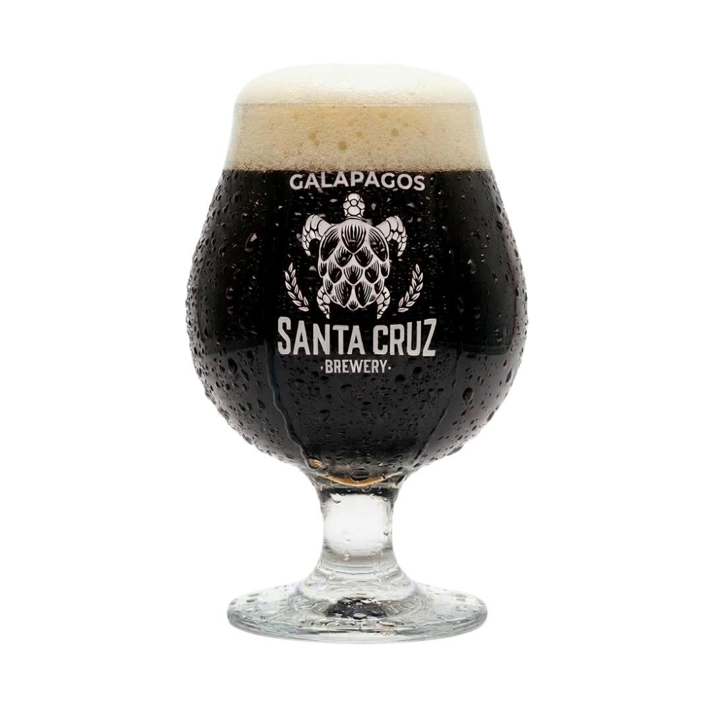
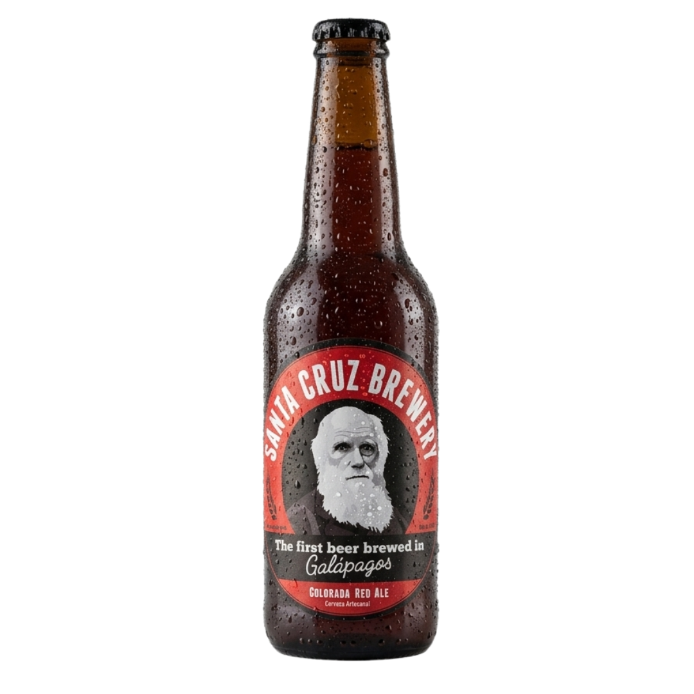
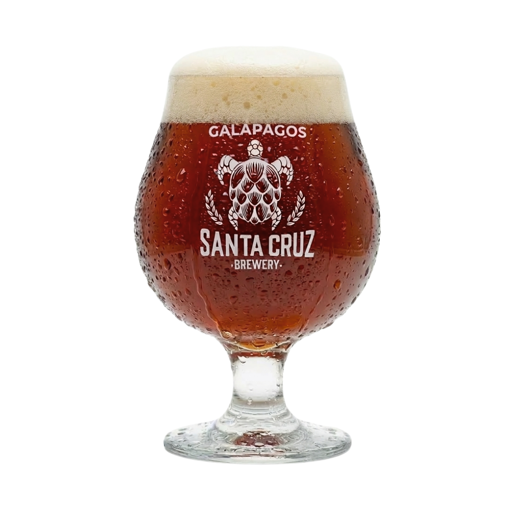
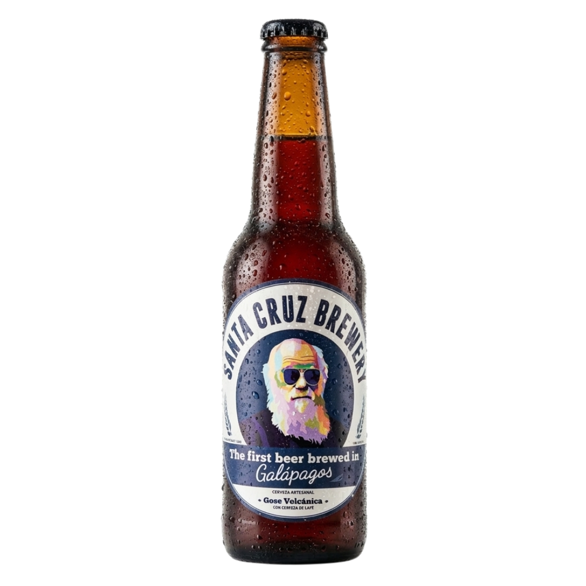
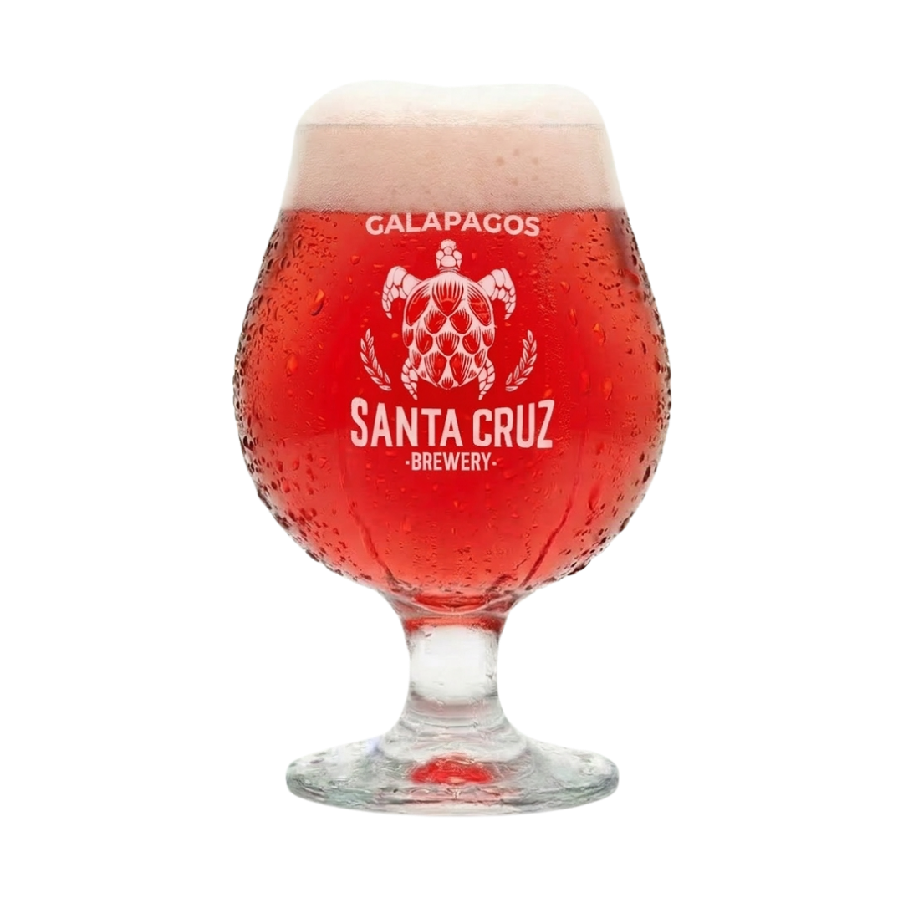
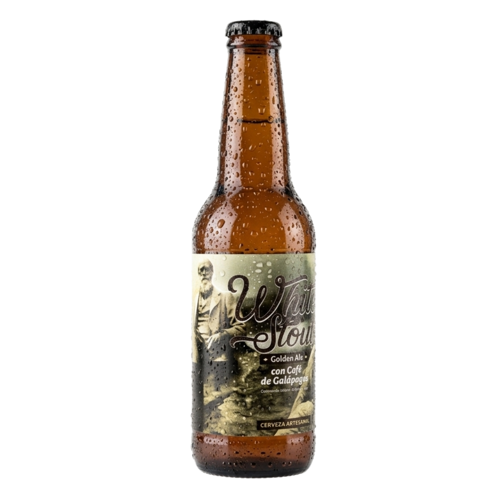
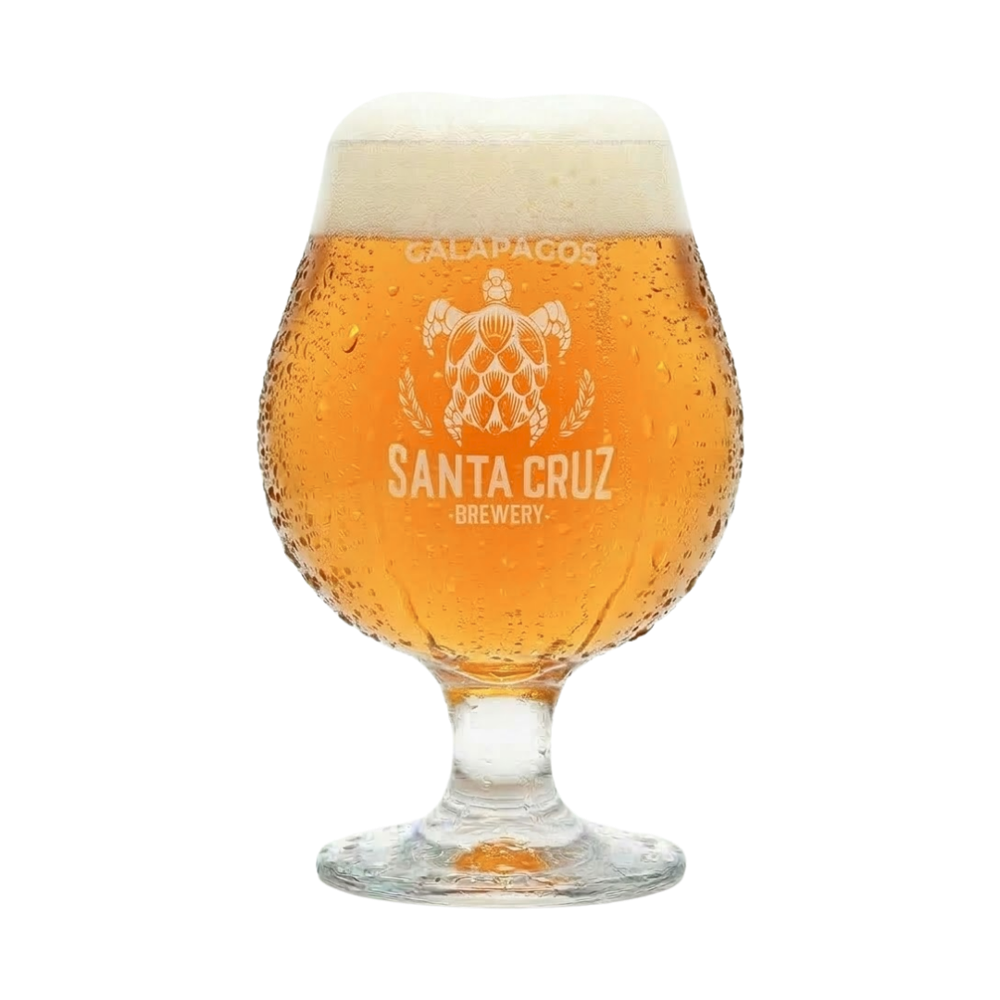

HAMMERHEAD IPA
HAZY IPA
6.5%ABV60IBU
Cerveza turbia, jugosa y aromática, con intensos perfiles frutales.


HAMMERHEAD IPA
6.5%ABV60IBU
Cerveza turbia, jugosa y aromática, con intensos perfiles frutales.


CARAPACHUPA
6%ABV16IBU
Cerveza oscura con sabores a chocolate y café, cuerpo medio y un perfil equilibrado.


COLORADA
6%ABV18IBU
Cerveza de color rojizo con perfil maltoso, destacando notas a caramelo y toffee.


SPECIALTY ALE
4.5%ABV10IBU
Cerveza sour de trigo; su color y sus aromas son muy especiales por el uso de cerezas de café, jamaica y sal marina de Galápagos.


BLOND CON CAFÉ
4.5%ABV12IBU
Aspecto rubio, pero con el sabor profundo de una stout a cacao y café de Galápagos.